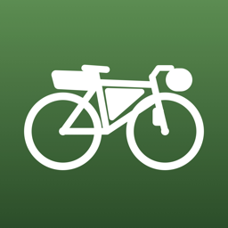

Bikepacking
Packliste, Etappen und Versorgung für deine Radreise
Kontakt
Fragen, Probleme oder Ideen? Schreib mir gern eine E-Mail an signorependejo@gmail.com. Ich antworte in der Regel innerhalb weniger Tage.
Hilfreich sind dein iPhone-Modell, die iOS-Version und eine kurze Beschreibung – bei Problemen mit einer Route gern auch die GPX-Datei.
Was kann die App?
- Ausrüstung und Taschen mit Gewicht, Preis, gefahrenen Kilometern und Wartungshinweis.
- Packlisten mit Verteilung auf Lenker-, Rahmen-, Sattel- und Gabeltaschen, Basisgewicht und Vorlagen vom Overnighter bis zum Ultra-Rennen.
- Touren aus GPX-Dateien, aufgeteilt in Tagesetappen – mit Höhenprofil, Fahrzeit, Ankunft vor oder nach Sonnenuntergang, Wetter und Wind, Kalorien- und Wasserbedarf, steilen Abschnitten und Untergrund.
- Versorgung entlang der Route (Pro): Wasser, Supermärkte, Cafés, Campingplätze, Hütten, Unterkünfte und Fahrradläden aus OpenStreetMap, dazu die längsten Abschnitte ohne Wasser oder Einkauf. Mit der Option E-Bike (unter „Mehr“) zusätzlich Ladestationen für E-Bikes.
- Reise-Check: Einkaufen mit Öffnungszeiten und Warnung vor Sonn- und Feiertagen (Pro), Bahnhöfe zum Aussteigen, Regeln zum Übernachten draußen in 15 Ländern und Schutzgebiete an der Route, Schlafsack gegen Nachtkälte, Strom-Budget für Handy und Powerbank sowie Reifendruck nach Gepäck und Untergrund.
- Unterwegs: Live-Navigation mit Restkilometern, nächster Versorgung und nächstem Bahnhof, auch auf dem Sperrbildschirm, Notfallkarte, Check-in per SMS und Live-Standort per Link für Familie und Freunde (Pro).
- Ultra-Race-Modus (Pro): Fahrplan mit Zeitlimit, Checkpoints und Schlafstrategie – unterwegs siehst du, ob du vor oder hinter dem Plan liegst.
- Touren der Community: gefahrene Touren anderer Radreisender mit Etappen und Packliste ansehen und mit einem Tipp übernehmen – die Packliste als Vorschlag, der zeigt, was du schon hast – oder eigene Touren teilen, mit Privatzone an Start und Ziel.
- Community-Schlafplätze: Hütten, Unterstände, Biwak- und Trekkingplätze von Radreisenden ansehen, selbst eintragen und bewerten.
- Tagebuch (Pro) mit Fotos und Ort, Checkliste, Rückblick mit teilbarer Bildkarte, Widget und Siri-Kurzbefehle.
Häufige Fragen
Wie bekomme ich eine Route in die App?
Exportiere die Tour als GPX-Datei, zum Beispiel aus Komoot, Strava, RideWithGPS oder bikerouter.de, und öffne sie mit „Teilen › Bikepacking“ oder im Tab Touren über „+“. Die App teilt die Strecke automatisch in Etappen; Anzahl und Etappenenden kannst du danach ändern. Alternativ planst du die Tour direkt auf der Karte (Pro) oder übernimmst eine Tour aus der Community.
Wie funktioniert der Live-Standort?
Schalte in der Fahrt-Ansicht über „…“ › „Live-Standort teilen“ das Teilen ein und schick den Link an Familie oder Freunde. Sie sehen deine Position, die gefahrene Strecke und die Restkilometer im Browser, ohne App. Die App meldet etwa alle fünf Minuten; beim Ausschalten oder 24 Stunden nach der letzten Meldung ist alles gelöscht.
Was wird beim Teilen einer Tour in der Community sichtbar?
Titel, Beschreibung, dein Spitzname, die Strecke ohne den ersten und letzten Kilometer (einstellbar), die Etappen und auf Wunsch Übernachtungsorte, Monat der Fahrt und die Packliste mit Gewichten. Uhrzeiten, Tagebuch, Fotos und Preise bleiben privat. Geteilte Touren entfernst du jederzeit unter Community › Meine Einträge.
Woher kommen die Versorgungspunkte – und wie aktuell sind sie?
Aus OpenStreetMap. Für Europa bereite ich die Daten jede Woche als Kartenausschnitte auf, die App lädt nur die Ausschnitte entlang deiner Route. Außerhalb Europas fragt sie die Overpass-Server von OpenStreetMap direkt ab, das kann einige Minuten dauern. Öffnungszeiten und Wasserstellen können sich ändern – plane immer etwas Reserve ein. Fehler kannst du direkt in OpenStreetMap korrigieren.
Funktioniert die App ohne Netz?
Route, Etappen, geladene Versorgungspunkte, Wetter und Untergrund bleiben gespeichert. Die Hintergrundkarte kommt von Apple Karten: Lade in der Karten-App vor der Tour das Gebiet als Offline-Karte herunter (Profilbild › Offline-Karten).
Wie werden Fahrzeit und Energiebedarf berechnet?
Aus deinem Fahrprofil (Mehr › Fahrprofil): Schnitt in der Ebene, Höhenmeter pro Stunde und Pausenanteil. Der Energiebedarf ergibt sich aus Gewicht von dir, Rad und Gepäck, Strecke, Höhenmetern und Grundumsatz. Das sind Schätzwerte.
Verschickt die App im Notfall automatisch eine Nachricht?
Nein. iOS erlaubt Apps nicht, selbst SMS zu senden. Die App bereitet die Nachricht mit deiner Position vor, abschicken musst du sie selbst. Im Notfall in Europa: 112.
Wie plane ich eine Tour mit Freunden?
Öffne die Tour und tippe auf „Gemeinsam planen“. Im Teilen-Fenster lädst du Freunde per Nachricht oder Mail ein. Sie brauchen Bikepacking und ein iCloud-Konto; nach dem Öffnen des Links sehen alle Route und Etappen, teilen unter „Wer bringt was“ die Ausrüstung auf und sprechen sich unter „Absprachen“ ab. Mit „In meine Touren übernehmen“ wird die Tour zur eigenen – mit Versorgung, Navigation und Tagebuch.
Wie funktionieren die Community-Schlafplätze?
Unter Community siehst du Einträge in deiner Nähe; entlang einer Tour erscheinen sie in der Versorgung. Zum Eintragen und Bewerten musst du in iCloud angemeldet sein und den Regeln der Community zustimmen. Anstößige oder falsche Einträge meldest du über „…“ bzw. durch Wischen über eine Bewertung – ich prüfe Meldungen innerhalb von 24 Stunden. Beachte vor Ort die Regeln zum Übernachten: In vielen Ländern und Schutzgebieten ist Wildcampen verboten.
Wo sind meine Daten gespeichert?
Ausrüstung, Touren und Tagebuch nur auf deinem iPhone; sie sind Teil deines normalen iPhone-Backups. Community-Beiträge, die du teilst, liegen in der öffentlichen iCloud-Datenbank der App.
Daten und Lizenzen
Versorgung, Untergrund und OSM-Karten: © OpenStreetMap-Mitwirkende, ODbL 1.0; Kartenstil CyclOSM (CC BY-SA 2.0). Wetter: Open-Meteo.com, CC BY 4.0. Karten: Apple Karten.